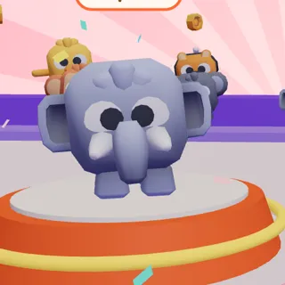
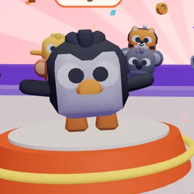
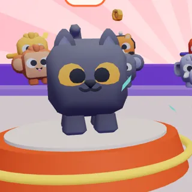

Rondas cortas y locas
1-2 minutos por ronda: corre, esquiva, empuja, recuerda, pinta o pasa la bomba. Cada ronda es distinta y siempre hay revancha.
Party royale en 3D · Android · PC · Web
Elige tu animal, entra a una sala de hasta 25 y sobrevive ronda tras ronda de carreras locas, suelos que desaparecen, bombas y lava que sube. Solo los mejores clasifican. ¿Te llevas la corona?
Todo lo que ves aquí es del juego real: capturas y video grabados en partidas.



1-2 minutos por ronda: corre, esquiva, empuja, recuerda, pinta o pasa la bomba. Cada ronda es distinta y siempre hay revancha.
Los pesados aguantan empujones, los ligeros vuelan más lejos, los rápidos ganan carreras. Cada uno tiene su habilidad.
Bots que corren, empujan, esquivan y recuerdan llenan la sala al instante: fácil, medio o difícil. O juega con tus amigos en línea.
Sin anuncios y sin compras. Todo se gana jugando. Se juega sin conexión y funciona en teléfonos modestos.
Pasa el cursor (o toca) para verlos en acción.
Grabado en el juego, sin montajes: 16 animales por sala, bots de dificultad media.
Crea una sala, comparte el código, un enlace o un QR. Salas públicas, de amigos o privadas, e incluso en la misma Wi-Fi sin internet. Si el anfitrión se va, la sala sigue.
Código de amigo, quién está en línea y en qué sala, e invitaciones que aparecen al instante. Expulsar, banear y bloquear para que nadie arruine la fiesta.
Tu nombre, tus estadísticas y 20 logros que pagan monedas: primera victoria, rachas, el zoológico completo...
10 sombreros, 8 bailes de victoria, 7 entradas, 7 estelas, 5 potenciadores y 4 mejoras. Todo con monedas del juego.
Juega como invitado en tu equipo, o inicia sesión con Google y lleva monedas, animales y logros al celular, la PC y el navegador.
Android (táctil y mando), Windows, macOS, Linux y navegador. Controles táctiles que acomodas a tu gusto y soporte para mandos Bluetooth y USB.
Lo que ya está, lo que viene y lo que soñamos.
Está en pruebas. La versión para Android llegará a Google Play después de la prueba cerrada; mira el roadmap para ver en qué punto va.
No tiene anuncios ni compras dentro del juego. Todo se desbloquea jugando.
No: contra bots se juega sin conexión, y hay salas en la misma Wi-Fi sin internet. Las salas por internet y el guardado en la nube son opcionales.
Sí: crea una sala y comparte el código, el enlace o el QR, o invítalos desde tu lista de amigos. Hasta 25 animales por sala; los bots llenan los huecos.
Sí: solo golpes de caricatura y caídas, sin chat, sin anuncios y sin compras.